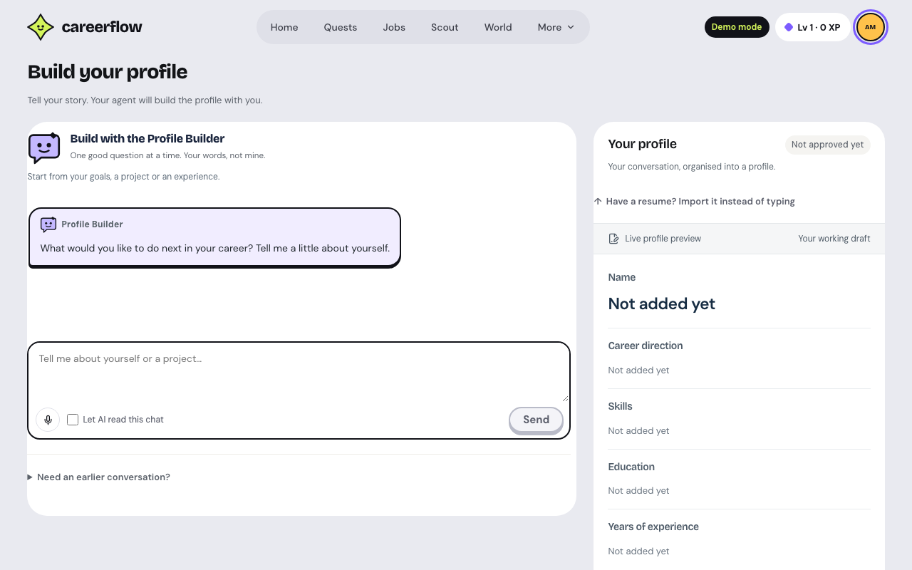
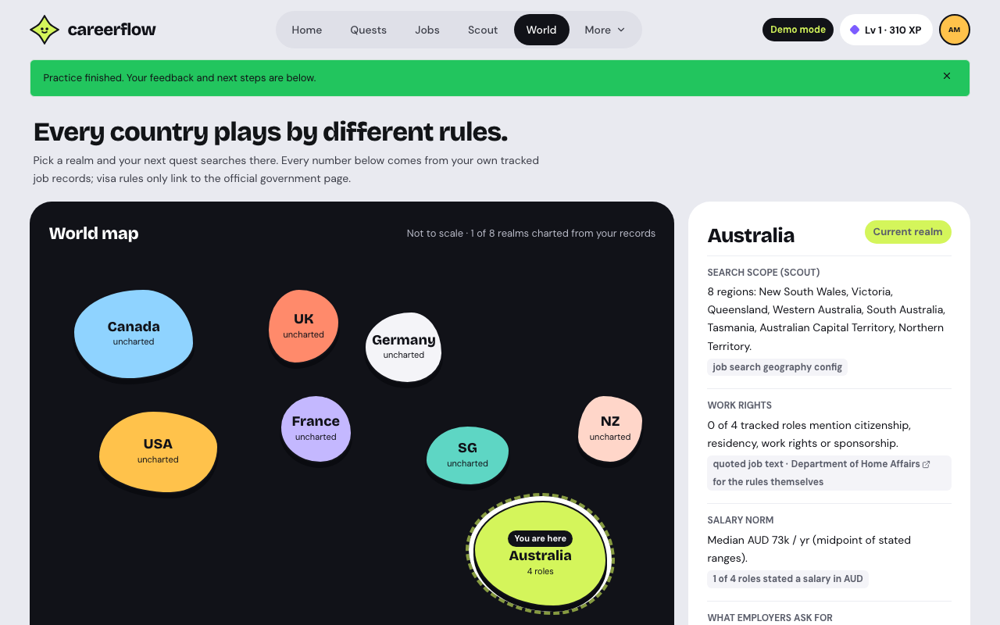
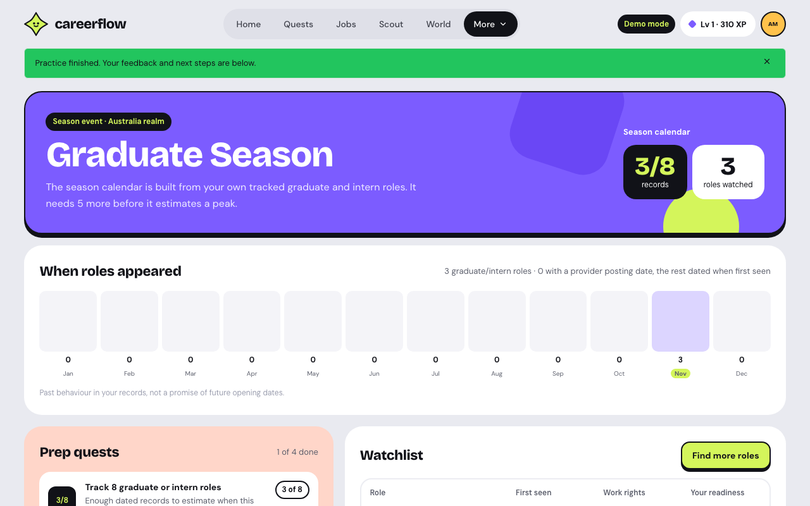
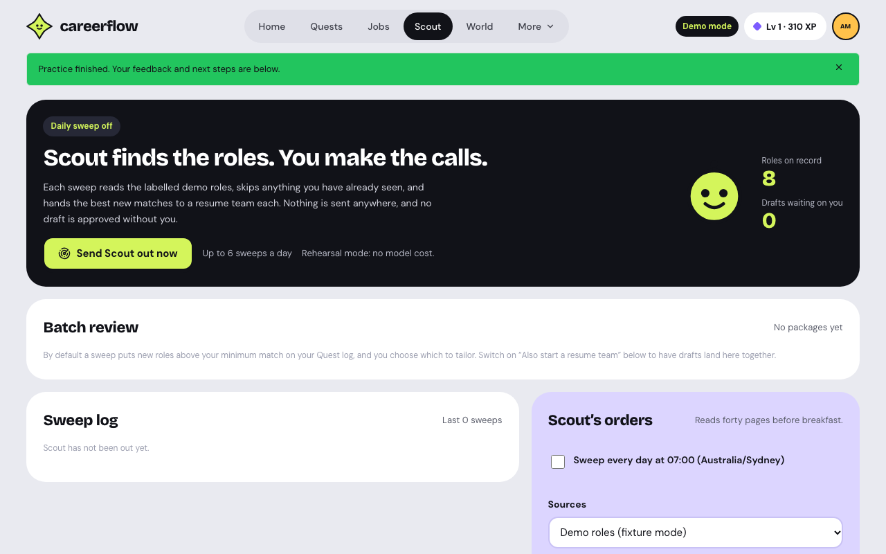

Talk it out
The Profile Builder asks one question at a time and keeps your own words.
Nine AI agents find tech roles across regions, show what each one asks for, tailor your resume from things you actually did and interview you until you're ready. You press apply.
Sign up, build a profile, pick a role, approve a resume, sit the interview, get graded. Jump to any step below.
Use the arrows, swipe, or click the next screen. Click the one in the middle to see it big.

The Profile Builder asks one question at a time and keeps your own words.

Every role gets a match score and the requirements you can't show yet.

Five agents tailor it for the role. Every line points back to something you approved.

Motivation, behavioural, technical, scenario. Questions stay hidden until the panel asks them.

A live voice call with the panel: subtitles on, follow-ups included, pause any time.

STAR for stories, specifics and checks for technical answers. Plus what the panel still wanted to hear.

Experience rank and skill levels come from your evidence, not a self-rating.

Link GitHub, Codeforces, LeetCode and more. Preview first, keep what you want.

Work rights, salary norms and what employers ask for, region by region.

Nine agents, each with a job and a list of things it isn't allowed to do.

A hiring calendar from your own tracked roles, and prep quests before the rush.

Daily sweeps. Only new roles above your bar reach you.
Pick someone to see what they do, what they're allowed to touch, and what they'll never do.
Click a card to see it in the app.
A typed full-stack app with durable multi-agent workflows, tested end to end. Read the code on GitHub →
Leave an email and you'll hear from us once, at launch.